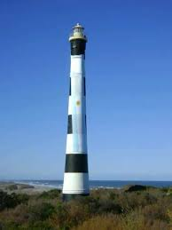
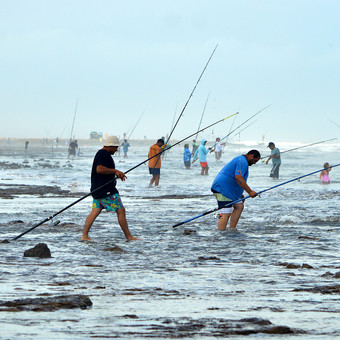

Claromeco es uno de los tres balnearios, junto con Reta y Orense, del partido de Tres Arroyos. Situado a 75 Km de la ciudad cabecera,se llega transitando 12 Km por ruta 228 y al llegar a la rotonda del pescado se toma la ruta 73.
Esta playa cuenta con un faro de mamposteria con una altura de 54 metros, en su interior tiene una escalera en forma de caracol con 278 escalones y por fuera esta pintado con cinco franjas horizontales blancas y cinco negras. Se construyo para evitar que los barcos se acerquen a los bancos de arena.
En el año 1962 inicia en Claromeco la historia del concurso de pesca mas importante de la zona "Las 24 Horas de la Corvina Negra" organizado por el Club Cazadores de Tres Arroyos. Dicho evento transcurre en las tres playas del partido durante el segundo fin de semana de febrero.
